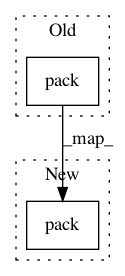

b1e4cb19afc4f7ac47187303d0c2045b68932c4e,GPflow/kernels.py,Bias,K,#Bias#,70
Before Change
def K(self, X, X2=None):
if X2 is None:
return self.variance * tf.ones(tf.pack([tf.shape(X)[0], tf.shape(X)[0]]), tf.float64)
else:
return self.variance * tf.ones(tf.pack([tf.shape(X)[0], tf.shape(X2)[0]]), tf.float64)
After Change
def K(self, X, X2=None):
if X2 is None:
shape = tf.pack([tf.shape(X)[0], tf.shape(X)[0]])
else:
shape = tf.pack([tf.shape(X)[0], tf.shape(X2)[0]])
return self.variance * tf.ones(shape, tf.float64)
In pattern: SUPERPATTERN
Frequency: 4
Non-data size: 2
Instances
Project Name: GPflow/GPflow
Commit Name: b1e4cb19afc4f7ac47187303d0c2045b68932c4e
Time: 2016-04-13
Author: james.hensman@gmail.com
File Name: GPflow/kernels.py
Class Name: Bias
Method Name: K
Project Name: GPflow/GPflow
Commit Name: b1e4cb19afc4f7ac47187303d0c2045b68932c4e
Time: 2016-04-13
Author: james.hensman@gmail.com
File Name: GPflow/kernels.py
Class Name: Bias
Method Name: K
Project Name: GPflow/GPflow
Commit Name: b9d42d6154f5f98696a67097cc93dac027398d76
Time: 2016-04-13
Author: james.hensman@gmail.com
File Name: GPflow/sgpr.py
Class Name: SGPR
Method Name: build_predict